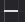
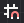
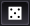
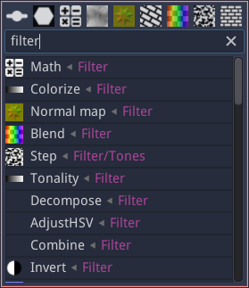

Graph panel¶
The graph panel is where materials can be edited, by adding and configuring nodes, and connecting them.

Grid, zoom and minimap¶
In the top left corner of the graph panel, the following buttons can be used to modify the zoom level and configure the grid:
the  button zooms out.
the
button resets the zoom factor.
the
button zooms in.
the  button toggles the grid. When moved, nodes will stick to the grid when it is active. The grid size can be modified using the spinbox next to the grid button
the
button toggles the minimap that is shown in the bottom right corner of the graph view
The view can be centered using the View -> Center view menu item or the C shortcut, and the zoom factor can be reset using the View -> Reset zoom menu item or the Alt-0 shortcut.
The minimap shows an overview of the whole graph. Clicking on it with the left or middle mouse button will center the graph view on the clicked location. While connecting nodes, it is thus possible to click on the minimap with the middle mouse button to make the target node visible.
Material navigation¶
In the top right corner of the graph panel, the graph navigation button
 can be used to show a tree view of the
material (this is only useful when the Hierarchy panel is not visible).
Double clicking on an item in this tree will show it in the graph view.
can be used to show a tree view of the
material (this is only useful when the Hierarchy panel is not visible).
Double clicking on an item in this tree will show it in the graph view.
When a subgraph is shown in the graph panel, additional items are visible in the top right corner:
a text entry shows the name of the subgraph and can be used to modify it.
a  button to decide if the current subgraph transmits its random seed to its children.
a
 button to move to the parent of the currently shown subgraph.
button to move to the parent of the currently shown subgraph.
Creating nodes¶
There are several ways to create new nodes.
They can be dragged and dropped from the Library panel to the graph panel.
It is also possible to use the node menu that can be shown using the right mouse button. This menu has a filter field to quickly find the desired node.
The node menu will also be shown when connecting a node’s input or output into an empty space of the graph. In this case, only compatible nodes will be shown, and the newly created node will automatically be connected.
Selecting and copying nodes¶
Clicking on the title bar of a node will select it. Selecting a node will show its first output (if any) in the 2D preview. It is possible to select several nodes by holding the Control key while selecting.
Selected nodes can be copied using the Edit -> Copy menu or the Control+C keyboard shortcut. They can also be cut using the Edit -> Cut menu entry or the Control+X shortcut. Both operations store the selected nodes and their interconnections in the clipboard. Note that the format used is JSON, and nodes or group of nodes can easily be shared using this format.
The contents of the clipboard can be pasted into a graph using the Edit -> Paste menu or the Control+V keyboard shortcut.
Selected items can also be duplicated using the Edit -> Duplicate menu or the Control+D keyboard shortcut. This operation does not affect the clipboard.
Background 2D preview¶
The bottom left “bricks” button can be used to show a 2D preview in the background of the graph view.
Background 3D preview¶
The bottom left “cube” button can be used to show a 3D preview in the background of the graph view. The blue/red arrows icon is used to rotate the object or the view, and other controls are similar to the 3D preview.